Avaliação em Massa
Modelagem
Academia da Engenharia de Avaliações
28 de julho de 2025
Modelo Aditivo
Modelo Aditivo
- Na RLM podemos adicionar outras variáveis explicativas ao modelo:
- \[\mathbf y = \beta_0 + \beta_1 \pmb X_1 + \beta_2 \pmb X_2 + \ldots + \beta_k \pmb X_k + \pmb \epsilon \qquad(1)\]
- Porém, também poderíamos acrescentar outros termos de ordem superior, ou seja, com a interação entre as variáveis
- Por exemplo, com duas variáveis, poderíamos ajustar um modelo com termos de segunda ordem assim:
- \[\mathbf y = \beta_0 + \beta_1 \pmb X_1 + \beta_2 \pmb X_2 + \beta_4 X_1^2 + \beta_5 X_2^2 + \beta_3 \pmb X_1X_2 + \pmb \epsilon \qquad(2)\]
- Por exemplo, com duas variáveis, poderíamos ajustar um modelo com termos de segunda ordem assim:
- Inicialmente trataremos apenas dos termos de primeira ordem e vamos nos restringir, portanto, ao modelo aditivo
Teorema Central do Limite
Teorema Central do Limite
- O Teorema Central do Limite (TLC) pode ser apresentado em diversas formas
- Central, em Teorema Central do Limite deve ser compreendido como um sinônimo de Fundamental.
Teorema 1 (Teorema Central do Limite) Seja um conjunto de \(n\) variáveis aleatórias independentes \(X_1\), \(X_2\), …, \(X_n\), todas com a mesma distribuição, de valor esperado \(\mu\) e variância \(\sigma^2\). A nova variável \(T = X_1 + X_2 + ... + X_n\) tem distribuição assintoticamente normal com média \(\mu_T = n\mu\) e variância \(\sigma_T^2=n\sigma^2\) (Matloff 2009, 158–59).
- Segundo Stigler (s.d., 5–20), ainda segundo o TLC, a média das variáveis \(X_1, X_2, \ldots, X_n\), \(\overline X = T/n = 1/n\sum_{i=1}^n X_n\) apresentará, assintoticamente:
\[ \bar X \sim \mathcal N(\mu, \sigma^2/n) \qquad(3)\]
Convergência
- Mas quantas variáveis são necessárias para convergência?
- Depende da distribuição delas
- Para Matloff (2009): “tipicamente \(n = 20\) ou mesmo \(n = 10\) é suficiente” (para atingir a normalidade da soma)
- Segundo Stigler (s.d., 5–21), se as variáveis \(X_1\), \(X_2\), …, \(X_n\) tiverem distribuição normal, então a Equação 3 é exata (e não aproximadamente normal, como diz o teorema).
- Na prática utilizamos bem menos variáveis de uma vez.
- Contudo, se a distribuição das variáveis \(X_i\) for próxima da distribuição normal, a aproximação pode ser excelente para \(n\) tão baixo quanto 5 ou 10 (ver Stigler (s.d., 5–22))
- As variáveis \(X_i\) devem ser i.i.d?
- o TLC de Lyapunov, por exemplo, afirma apenas que as variáveis devem ser independentes, mas não identicamente distribuídas, o que já é um grande alívio
Velocidade da convergência
- 4 variáveis com distribuição uniforme:
Velocidade de Convergência
- Com 3 variáveis já temos distribuição praticamente normal!
Exemplo de Modelo Aditivo
Dados
Dados
| type | Variable | missing | % | mean | sd | p0 | p25 | p50 | p75 | p100 | hist |
|---|---|---|---|---|---|---|---|---|---|---|---|
| numeric | SalePrice | 0 | 1 | 277.412,66 | 137.616,12 | 84.000,00 | 180.000,00 | 229.900,00 | 335.000,00 | 920.000,0 | ▇▃▂▁▁ |
| numeric | SqFeet | 0 | 1 | 2.260,88 | 711,73 | 980,00 | 1.701,00 | 2.061,00 | 2.638,00 | 5.032,0 | ▆▇▅▁▁ |
| numeric | Beds | 0 | 1 | 3,48 | 1,00 | 1,00 | 3,00 | 3,00 | 4,00 | 7,0 | ▃▇▇▂▁ |
| numeric | Baths | 0 | 1 | 2,65 | 1,06 | 1,00 | 2,00 | 3,00 | 3,00 | 7,0 | ▇▆▃▁▁ |
| numeric | Air | 0 | 1 | 0,83 | 0,38 | 0,00 | 1,00 | 1,00 | 1,00 | 1,0 | ▂▁▁▁▇ |
| numeric | Garage | 0 | 1 | 2,10 | 0,65 | 0,00 | 2,00 | 2,00 | 2,00 | 7,0 | ▂▇▂▁▁ |
| numeric | Pool | 0 | 1 | 0,07 | 0,25 | 0,00 | 0,00 | 0,00 | 0,00 | 1,0 | ▇▁▁▁▁ |
| numeric | Year | 0 | 1 | 1.966,86 | 17,62 | 1.885,00 | 1.956,00 | 1.966,00 | 1.981,00 | 1.998,0 | ▁▁▂▇▆ |
| numeric | Quality | 0 | 1 | 2,19 | 0,64 | 1,00 | 2,00 | 2,00 | 3,00 | 3,0 | ▂▁▇▁▅ |
| numeric | Style | 0 | 1 | 3,35 | 2,56 | 1,00 | 1,00 | 2,00 | 7,00 | 11,0 | ▇▁▃▁▁ |
| numeric | Lot | 0 | 1 | 24.344,67 | 11.681,28 | 4.560,00 | 17.159,00 | 22.196,00 | 26.777,00 | 86.830,0 | ▆▇▁▁▁ |
| numeric | Highway | 0 | 1 | 0,02 | 0,14 | 0,00 | 0,00 | 0,00 | 0,00 | 1,0 | ▇▁▁▁▁ |
| numeric | Age | 0 | 1 | 31,14 | 17,62 | 0,00 | 17,00 | 32,00 | 42,00 | 113,0 | ▆▇▂▁▁ |
| numeric | PU | 0 | 1 | 12,76 | 6,57 | 2,51 | 8,13 | 11,25 | 15,39 | 47,5 | ▇▅▂▁▁ |
Modelo Inicial
Call:
lm(formula = PU ~ Lot + SqFeet, data = homePrices)
Residuals:
Min 1Q Median 3Q Max
-10.3217 -2.2041 -0.8209 1.3220 28.7959
Coefficients:
Estimate Std. Error t value Pr(>|t|)
(Intercept) 6.03743814 0.64596495 9.346 <2e-16 ***
Lot -0.00030336 0.00001516 -20.017 <2e-16 ***
SqFeet 0.00623820 0.00024874 25.079 <2e-16 ***
---
Signif. codes: 0 '***' 0.001 '**' 0.01 '*' 0.05 '.' 0.1 ' ' 1
Residual standard error: 3.986 on 518 degrees of freedom
Multiple R-squared: 0.6329, Adjusted R-squared: 0.6315
F-statistic: 446.6 on 2 and 518 DF, p-value: < 2.2e-16Plotagem do Modelo
NA RLM o modelo somente pode ser plotado com resíduos parciais:
Resíduos totais são a diferença entre os valores observados e os valores previstos:
- \(\mathbf y = \beta_0 + \beta_1 \pmb X_1 + \beta_2 \pmb X_2 + \ldots + \beta_k \pmb X_k + \pmb \epsilon\)
- \(\mathbf{\hat y} = \hat \beta_0 + \hat \beta_1 \pmb X_1 + \hat \beta_2 \pmb X_2 + \ldots + \hat \beta_k \pmb X_k\)
- \(\mathbf y = \mathbf{\hat y} + \pmb{\hat\epsilon}\)
- \(\pmb{\hat \epsilon} = \mathbf y - \hat{\mathbf y}\)
- \(\pmb{\hat \epsilon} = \mathbf y - (\hat \beta_0 + \hat \beta_1 \pmb X_1 + \hat \beta_2 \pmb X_2 + \ldots + \hat \beta_k \pmb X_k)\)
Resíduos Parciais são obtidos ao acrescentar aos resíduos totais o efeito isolado de uma das variáveis explicativas:
- \[\pmb{\hat \epsilon_i} = \mathbf y - \hat{\mathbf y} + \beta_i X_i \qquad(4)\]
Por exemplo:
- \(\pmb{\hat \epsilon_1} = \mathbf y - \hat \beta_0 - \hat \beta_1 \pmb X_1 + \hat \beta_1 \pmb X_1 - \hat \beta_2 \pmb X_2 - \ldots - \hat \beta_k \pmb X_k\)
Gráficos de Resíduos Parciais
- Os gráficos de resíduos parciais são obtidos fazendo:
\(\pmb{\hat \epsilon_1} = \mathbf y - \hat \beta_0 - \hat \beta_1 \pmb X_1 + \hat \beta_1 \pmb X_1 - \hat \beta_2 \pmb X_2 - \ldots - \hat \beta_k \pmb X_k\)
\(\pmb{\hat \epsilon_2} = \mathbf y - \hat \beta_0 - \hat \beta_1 \pmb X_1 - \hat \beta_2 \pmb X_2 + \hat \beta_2 \pmb X_2 - \ldots - \hat \beta_k \pmb X_k\)
\(\ldots\)
\(\pmb{\hat \epsilon_k} = \mathbf y - \hat \beta_0 - \hat \beta_1 \pmb X_1 - \hat \beta_2 \pmb X_2 - \ldots - \hat \beta_k \pmb X_k + \hat \beta_k \pmb X_k)\)
E depois plotando:
- \(\pmb{\hat \epsilon_i}\) vs. \(X_i\)
Gráficos de Resíduos Parciais
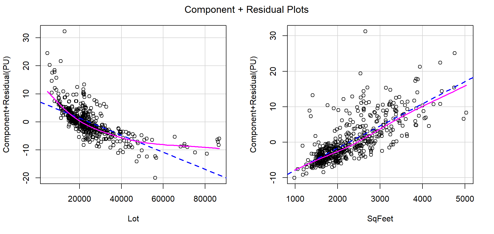Corrigindo não-linearidades
Call:
lm(formula = PU ~ I(Lot^-1) + SqFeet, data = homePrices)
Residuals:
Min 1Q Median 3Q Max
-15.3958 -1.7151 -0.2088 1.0839 26.6640
Coefficients:
Estimate Std. Error t value Pr(>|t|)
(Intercept) -1.153e+01 6.813e-01 -16.93 <2e-16 ***
I(Lot^-1) 1.871e+05 7.113e+03 26.31 <2e-16 ***
SqFeet 6.697e-03 2.192e-04 30.56 <2e-16 ***
---
Signif. codes: 0 '***' 0.001 '**' 0.01 '*' 0.05 '.' 0.1 ' ' 1
Residual standard error: 3.473 on 518 degrees of freedom
Multiple R-squared: 0.7214, Adjusted R-squared: 0.7203
F-statistic: 670.5 on 2 and 518 DF, p-value: < 2.2e-16Gráficos de Resíduos Parciais
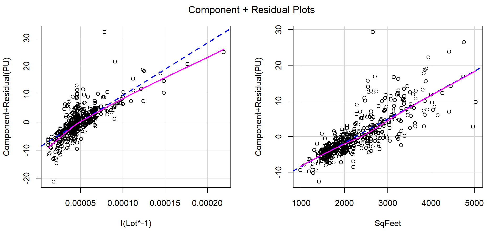Aumentando a complexidade do modelo
Call:
lm(formula = PU ~ I(Lot^-1) + SqFeet + Age, data = homePrices)
Residuals:
Min 1Q Median 3Q Max
-14.6216 -1.6280 -0.2512 1.1262 24.5530
Coefficients:
Estimate Std. Error t value Pr(>|t|)
(Intercept) -6.125e+00 8.216e-01 -7.455 3.81e-13 ***
I(Lot^-1) 1.808e+05 6.537e+03 27.659 < 2e-16 ***
SqFeet 5.674e-03 2.246e-04 25.265 < 2e-16 ***
Age -8.949e-02 8.858e-03 -10.103 < 2e-16 ***
---
Signif. codes: 0 '***' 0.001 '**' 0.01 '*' 0.05 '.' 0.1 ' ' 1
Residual standard error: 3.177 on 517 degrees of freedom
Multiple R-squared: 0.7673, Adjusted R-squared: 0.766
F-statistic: 568.3 on 3 and 517 DF, p-value: < 2.2e-16Aumentando a complexidade do modelo
Call:
lm(formula = PU ~ I(Lot^-1) + SqFeet + Age + Quality, data = homePrices)
Residuals:
Min 1Q Median 3Q Max
-13.5944 -1.6660 -0.2147 1.4229 22.9421
Coefficients:
Estimate Std. Error t value Pr(>|t|)
(Intercept) 5.753e-01 1.181e+00 0.487 0.626
I(Lot^-1) 1.863e+05 6.250e+03 29.801 < 2e-16 ***
SqFeet 4.526e-03 2.619e-04 17.284 < 2e-16 ***
Age -5.412e-02 9.626e-03 -5.622 3.09e-08 ***
Quality -2.503e+00 3.311e-01 -7.560 1.85e-13 ***
---
Signif. codes: 0 '***' 0.001 '**' 0.01 '*' 0.05 '.' 0.1 ' ' 1
Residual standard error: 3.017 on 516 degrees of freedom
Multiple R-squared: 0.7905, Adjusted R-squared: 0.7889
F-statistic: 486.8 on 4 and 516 DF, p-value: < 2.2e-16Modelo Transformado
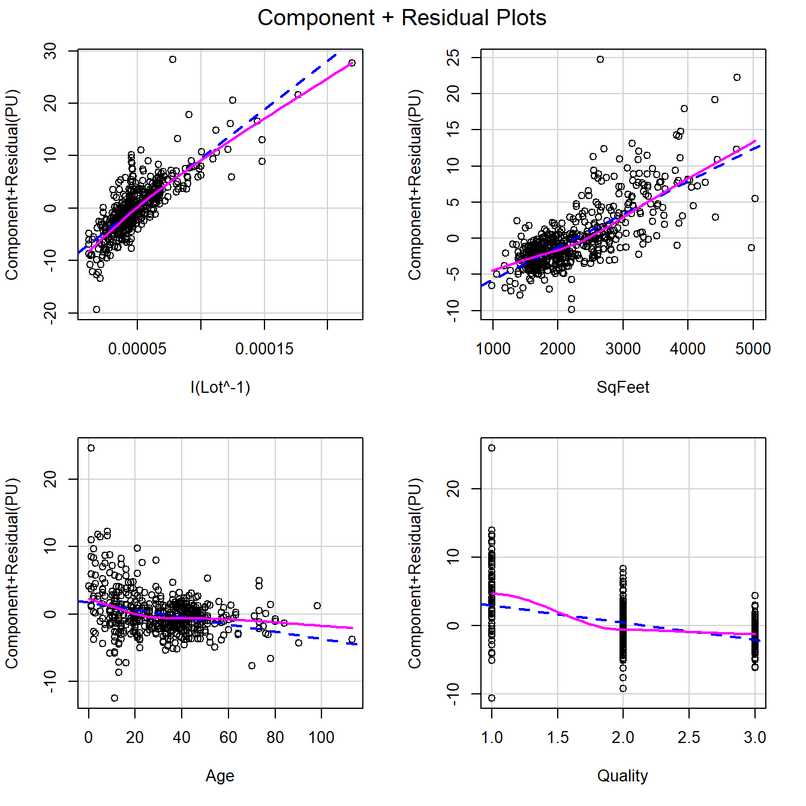Variáveis qualitativas
Variáveis qualitativas
- Até agora tratamos apenas da relação entre variáveis numéricas ou quantitavas
- Existem, porém, diversas variáveis qualitativas que devemos utilizar para tratar a amostra que, em geral, é heterogênea
- Padrão de Acabamento
- Presença ou ausência de algum item em particular
- P. ex.: piscina, aquecimento,ar-condicionado central, etc.
- As variáveis qualitativas são usualmente modeladas como variáveis dicotômicas
- Isoladas
- Em grupo
Exemplo
homePrices <- within(homePrices,
Quality <- factor(Quality, levels = c(1, 2, 3),
labels = c("Primeira", "Segunda",
"Terceira"))
)
fit3 <- update(fit2, .~. + Quality)
S(fit3)Call: lm(formula = PU ~ I(Lot^-1) + SqFeet + Age + Quality, data = homePrices)
Coefficients:
Estimate Std. Error t value Pr(>|t|)
(Intercept) 1.781e+00 9.818e-01 1.815 0.0702 .
I(Lot^-1) 1.829e+05 5.828e+03 31.384 < 2e-16 ***
SqFeet 4.069e-03 2.489e-04 16.348 < 2e-16 ***
Age -5.851e-02 8.970e-03 -6.523 1.65e-10 ***
QualitySegunda -5.786e+00 4.774e-01 -12.119 < 2e-16 ***
QualityTerceira -6.748e+00 6.459e-01 -10.448 < 2e-16 ***
---
Signif. codes: 0 '***' 0.001 '**' 0.01 '*' 0.05 '.' 0.1 ' ' 1
Residual standard deviation: 2.807 on 515 degrees of freedom
Multiple R-squared: 0.819
F-statistic: 466 on 5 and 515 DF, p-value: < 2.2e-16
AIC BIC
2562.15 2591.94 Como funcionam as variáveis dicotômicas?
- As variáveis dicotômicas isoladas usualmente recebem um código de dois números:
- P. Ex.:
- Com Piscina: 1
- Sem Piscina: 0
- P. Ex.:
- As variáveis dicotômicas em grupo são variáveis que recebem um código 0/1, porém para isto utilizam \(g-1\) variáveis para poder diferenciar os \(g\) grupos.
(Intercept) I(Lot^-1) SqFeet Age QualitySegunda QualityTerceira
1 1 0.00004500248 3032 26 1 0
2 1 0.00004364525 2058 22 1 0
3 1 0.00004684938 1780 18 1 0
4 1 0.00005766348 1638 35 1 0
5 1 0.00004590104 2196 30 1 0
6 1 0.00005290445 1966 26 1 0
7 1 0.00005365095 2216 26 1 0
8 1 0.00004522431 1597 43 1 0
9 1 0.00006982753 1622 23 0 1
10 1 0.00003090426 1976 80 0 1
11 1 0.00001765568 2812 32 0 1
12 1 0.00003268508 2791 6 0 0Plotagem do Modelo
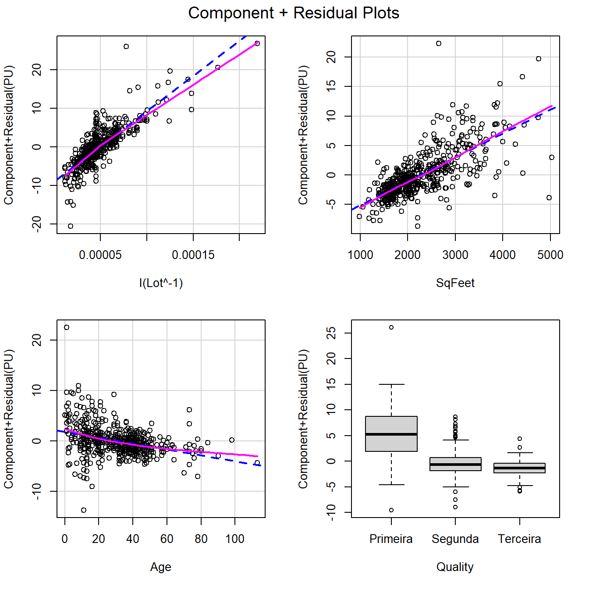Identificando outliers
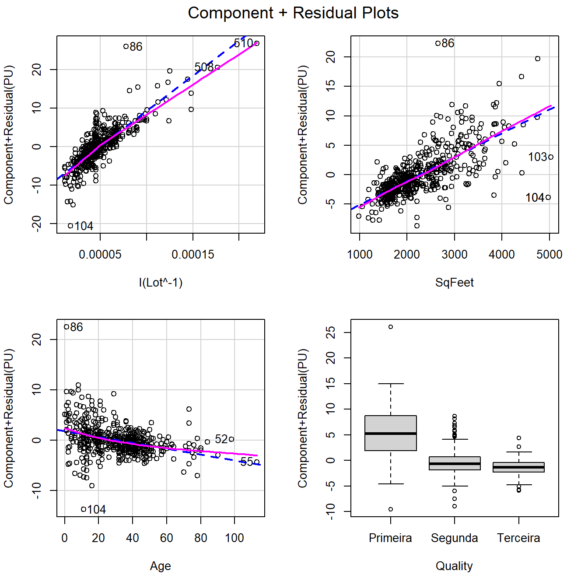Removendo outliers
fit4 <- lm(PU ~ I(Lot^-1) +SqFeet + Age + Quality,
data = homePrices, subset = -c(86, 104))
S(fit4, adj.r2 = T)Call: lm(formula = PU ~ I(Lot^-1) + SqFeet + Age + Quality, data = homePrices,
subset = -c(86, 104))
Coefficients:
Estimate Std. Error t value Pr(>|t|)
(Intercept) 8.626e-01 9.038e-01 0.954 0.34
I(Lot^-1) 1.792e+05 5.350e+03 33.497 < 2e-16 ***
SqFeet 4.357e-03 2.304e-04 18.906 < 2e-16 ***
Age -5.680e-02 8.219e-03 -6.912 1.43e-11 ***
QualitySegunda -5.408e+00 4.401e-01 -12.288 < 2e-16 ***
QualityTerceira -6.195e+00 5.944e-01 -10.422 < 2e-16 ***
---
Signif. codes: 0 '***' 0.001 '**' 0.01 '*' 0.05 '.' 0.1 ' ' 1
Residual standard deviation: 2.571 on 513 degrees of freedom
Multiple R-squared: 0.8401, Adjusted R-squared: 0.8385
F-statistic: 538.9 on 5 and 513 DF, p-value: < 2.2e-16
AIC BIC
2461.08 2490.85 Aumentando a complexidade do Modelo
Call: lm(formula = PU ~ I(Lot^-1) + SqFeet + Age + Quality + Pool, data =
homePrices, subset = -c(86, 104))
Coefficients:
Estimate Std. Error t value Pr(>|t|)
(Intercept) 9.507e-01 8.946e-01 1.063 0.288435
I(Lot^-1) 1.784e+05 5.299e+03 33.665 < 2e-16 ***
SqFeet 4.287e-03 2.289e-04 18.726 < 2e-16 ***
Age -5.766e-02 8.136e-03 -7.088 4.54e-12 ***
QualitySegunda -5.390e+00 4.355e-01 -12.376 < 2e-16 ***
QualityTerceira -6.127e+00 5.884e-01 -10.413 < 2e-16 ***
Pool 1.561e+00 4.505e-01 3.464 0.000577 ***
---
Signif. codes: 0 '***' 0.001 '**' 0.01 '*' 0.05 '.' 0.1 ' ' 1
Residual standard deviation: 2.544 on 512 degrees of freedom
Multiple R-squared: 0.8437, Adjusted R-squared: 0.8419
F-statistic: 460.7 on 6 and 512 DF, p-value: < 2.2e-16
AIC BIC
2451.06 2485.08 Outras variáveis
Call: lm(formula = PU ~ I(Lot^-1) + SqFeet + Age + Quality + Pool + Beds +
Baths + Air + Garage + Style + Highway, data = homePrices, subset = -c(86,
104))
Coefficients:
Estimate Std. Error t value Pr(>|t|)
(Intercept) -2.591e-01 1.143e+00 -0.227 0.82078
I(Lot^-1) 1.809e+05 5.509e+03 32.839 < 2e-16 ***
SqFeet 4.624e-03 3.258e-04 14.193 < 2e-16 ***
Age -5.473e-02 8.625e-03 -6.346 4.91e-10 ***
QualitySegunda -5.009e+00 4.586e-01 -10.921 < 2e-16 ***
QualityTerceira -5.576e+00 6.213e-01 -8.974 < 2e-16 ***
Pool 1.451e+00 4.521e-01 3.210 0.00141 **
Beds -1.346e-01 1.429e-01 -0.942 0.34645
Baths 2.930e-01 1.889e-01 1.551 0.12158
Air 1.791e-01 3.468e-01 0.517 0.60568
Garage -1.758e-02 2.200e-01 -0.080 0.93633
Style -1.630e-01 5.876e-02 -2.773 0.00575 **
Highway -8.337e-01 7.806e-01 -1.068 0.28604
---
Signif. codes: 0 '***' 0.001 '**' 0.01 '*' 0.05 '.' 0.1 ' ' 1
Residual standard deviation: 2.531 on 506 degrees of freedom
Multiple R-squared: 0.8471
F-statistic: 233.6 on 12 and 506 DF, p-value: < 2.2e-16
AIC BIC
2451.78 2511.31 Modelo final
Call: lm(formula = PU ~ I(Lot^-1) + SqFeet + Age + Quality + Pool + Style, data
= homePrices, subset = -c(86, 104))
Coefficients:
Estimate Std. Error t value Pr(>|t|)
(Intercept) 9.380e-02 9.477e-01 0.099 0.921196
I(Lot^-1) 1.807e+05 5.339e+03 33.837 < 2e-16 ***
SqFeet 4.727e-03 2.828e-04 16.714 < 2e-16 ***
Age -5.735e-02 8.090e-03 -7.089 4.52e-12 ***
QualitySegunda -5.093e+00 4.476e-01 -11.379 < 2e-16 ***
QualityTerceira -5.844e+00 5.950e-01 -9.823 < 2e-16 ***
Pool 1.530e+00 4.481e-01 3.414 0.000691 ***
Style -1.520e-01 5.798e-02 -2.622 0.009009 **
---
Signif. codes: 0 '***' 0.001 '**' 0.01 '*' 0.05 '.' 0.1 ' ' 1
Residual standard deviation: 2.53 on 511 degrees of freedom
Multiple R-squared: 0.8458, Adjusted R-squared: 0.8437
F-statistic: 400.4 on 7 and 511 DF, p-value: < 2.2e-16
AIC BIC
2446.13 2484.39 Métricas
Métricas
- Os MQO minimizam o erro médio quadrático, também conhecido como MSE.
- \[\text{MSE} = \frac{1}{n}\sum_{i = 1}^n (y_i - \hat y_i)^2 \qquad(5)\]
- Para ficar na mesma escala dos dados, é melhor:
- \[\text{RMSE} = \sqrt{\frac{1}{n}\sum_{i = 1}^n (y_i - \hat y_i)^2} \qquad(6)\]
- Há ainda o MAE (Mean Absolute Error):
- \[\text{MAE} = \frac{1}{n}\sum_{i=1}^n|y_i - \hat y_i| \qquad(7)\]
- Problemas com essas métricas é que elas são sensíveis à presença de outliers
Métricas Robustas
Não há nada que justifique a adoção das métricas do slide anterior
Poderíamos optar por minimizar MAD (Median Absolute Deviation), por exemplo, que é uma medida robusta:
- \[\text{MAD} = \text{Mediana} |y_i - \hat y_i| \qquad(8)\]
- \[\text{MAD}_n = b\cdot \text{Mediana} |y_i - \hat y_i| \qquad(9)\]
- \(\text{MAD}_n\), com \(b = 1,4826\), é um estimador não-viesado de \(\sigma\) da distribuição normal!
Ou MAPE (Mean Absolute Percentage Errors):
- \[\text{MAPE} = 100\frac{1}{n}\sum_{i = 1}^n \left|\frac{y_i - \hat y_i}{y_i}\right| \qquad(10)\]
Exemplo
| Termo | Est. | Erro | t | p valor |
|---|---|---|---|---|
| (Intercept) | 0,09 | 0,95 | 0,10 | 0,92 |
| I(Lot^-1) | 180.652,96 | 5.338,98 | 33,84 | 0,00 |
| SqFeet | 0,00 | 0,00 | 16,71 | 0,00 |
| Age | -0,06 | 0,01 | -7,09 | 0,00 |
| QualitySegunda | -5,09 | 0,45 | -11,38 | 0,00 |
| QualityTerceira | -5,84 | 0,59 | -9,82 | 0,00 |
| Pool | 1,53 | 0,45 | 3,41 | 0,00 |
| Style | -0,15 | 0,06 | -2,62 | 0,01 |
| Note: | ||||
| Erro-padrão dos resíduos: 2,53 em 511 graus de liberdade. | ||||
| a RMSE: 2,51 | ||||
| b MAE: 1,76 | ||||
| c MADn: 1,80 | ||||
| d R2: 0,85 | ||||
| e R2ajust: 0,84 | ||||
| f R2pred: 0,84 | ||||
| g MAPE: 15,46% |
- \(\text{RMSE}\) é muito próximo de \(\hat\sigma\)! \(MADn\) mais baixo que \(\hat\sigma\) preocupa!
Análise de Resíduos
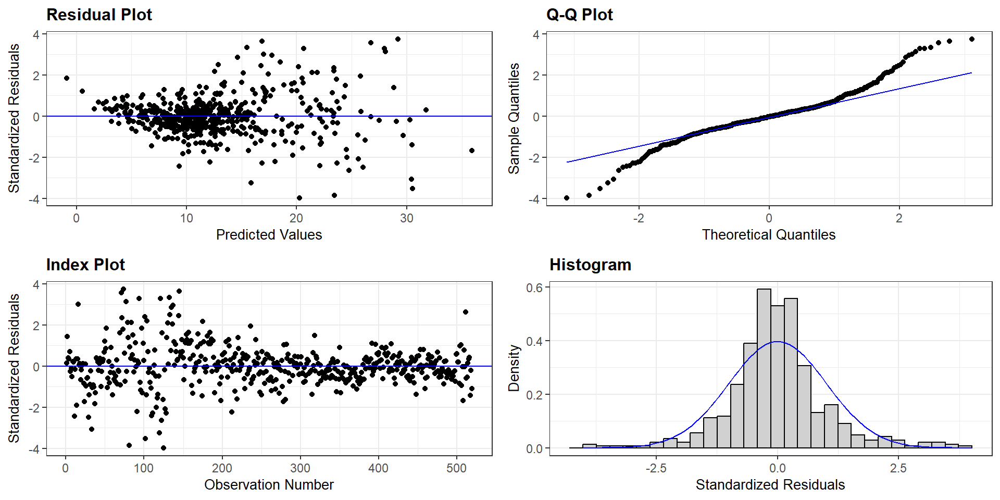- Falta de normalidade e homoscedasticidade! Resíduos Padronizados de grande magnitude!
Análise de Resíduos
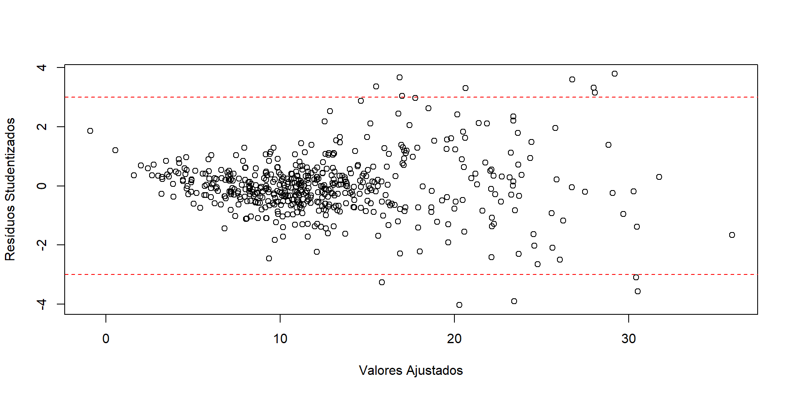Consequências da falta de normalidade e homoscedasticidade
- O modelo continua prevendo valores de tendência central como qualquer outro modelo.
- No entanto, ele não é mais BLUE!
- Não é possível realizar inferência clássica com ele!
- Os testes dos coeficientes estão prejudicados
- Não podemos formar intervalos de confiança com a distribuição t
- É preciso jogar o modelo fora?
- NÃO!
Hipóteses sobre os erros
Teoria
- Para um modelo de regressão linear qualquer:
- \[\mathbf y = \pmb{X\beta} + \pmb\epsilon\]
- \[\hat\beta = (\mathbf{X'X})^{-1}\mathbf{X'y}\]
- Independentemente da distribuição dos erros (Matloff 2009, 400)!
- \[\hat\beta = (\mathbf{X'X})^{-1}\mathbf{X'y}\]
- \[\mathbf y = \pmb{X\beta} + \pmb\epsilon\]
- A variância de \(\pmb{\beta}\) é:
- \(\widehat{\text{Cov}}(\pmb{\hat\beta}) = \text{Cov}((\mathbf{X'X})^{-1}\mathbf{X'y})\)
- Vamos chamar \(\mathbf B = (\mathbf{X'X})^{-1}\mathbf X'\).
- Então: \(\widehat{\text{Cov}}(\pmb{\hat\beta}) = \text{Cov}(\mathbf{By})\)
- Vamos usar a propriedade \(\text{Cov}(\mathbf{Au}) = \mathbf A\text{Cov}(\mathbf u) \mathbf A'\):
- \(\widehat{\text{Cov}}(\pmb{\hat\beta}) = \mathbf B\cdot \text{Cov}(\mathbf y | \mathbf X)\cdot \mathbf B'\)
Hipótese dos erros i.i.d
- \(\widehat{\text{Cov}}(\pmb{\hat\beta}) = \mathbf B\cdot \text{Cov}(\mathbf y | \mathbf X)\cdot \mathbf B'\)
- \(\mathbf B = (\mathbf{X'X})^{-1}\mathbf{X'}\)
- Então:
- \(\widehat{\text{Cov}}(\pmb{\hat\beta}) = (\mathbf{X'X})^{-1}\mathbf X'\cdot \text{Cov}(\mathbf y | \mathbf X) \cdot \mathbf X (\mathbf{X'X})^{-1}\)
- \(\widehat{\text{Cov}}(\pmb{\hat\beta}) = (\mathbf{X'X})^{-1}\mathbf X'\cdot \pmb \Omega \cdot \mathbf X (\mathbf{X'X})^{-1}\)
- Se os erros são i.i.d., com distribuição normal (\(\pmb{\epsilon} \overset{\underset{\mathrm{i.i.d.}}{}}{\sim} \mathcal N(0, \sigma^2\mathbf I)\)), então (Matloff 2009, 402):
- \[\mathbf \Omega_{\text{MQO}} = \text{Cov}(\mathbf y|\mathbf X) = \sigma^2 \mathbf I\]
- \[\widehat{\text{Cov}}(\pmb{\hat\beta}) = \hat\sigma^2 (\mathbf{X'X})^{-1}\]
- Os cálculdos dos erros-padrões dos \(\beta_i\) ficam extremamente facilitados!
Matriz de Variância-Covariância
- \[\pmb \Omega_{\text{MQO}} = \hat \sigma^2 \mathbf I = \begin{pmatrix} \hat \sigma^2 & 0 & \cdots & 0 \\ 0 & \hat \sigma^2 & \cdots & 0 \\ \vdots & \vdots & \ddots & \vdots \\ 0 & 0 & \cdots & \hat \sigma^2 \end{pmatrix}\]
E se erros não são i.i.d.?
- E se os erros não forem i.i.d.?
- Então:
\(\widehat{\text{Cov}}(\pmb{\hat\beta}) = (\mathbf{X'X})^{-1}\mathbf X'\cdot \pmb \Omega \cdot \mathbf X (\mathbf{X'X})^{-1}\)
Com:
- \[\pmb \Omega = \text{Cov}(\mathbf y | \mathbf X) = \begin{pmatrix} \text{var}(\varepsilon_1) & \text{cov}(\varepsilon_1\varepsilon_2) & \cdots & \text{cov}(\varepsilon_1\varepsilon_n) \\ \text{cov}(\varepsilon_2\varepsilon_1) & \text{var}(\varepsilon_2) & \cdots & \text{cov}(\varepsilon_2\varepsilon_n) \\ \vdots & \vdots & \ddots & \vdots \\ \text{cov}(\varepsilon_n\varepsilon_1) & \text{cov}(\varepsilon_n\varepsilon_2) & \cdots & \text{var}(\varepsilon_n) \end{pmatrix}\]
- Então:
Estimador Sanduíche
Teoria
É possível estimar a matriz Variância-Covariância através dos resíduos do MQO!
Long e Ervin (2000) avaliam as matrizes \(HC_0\), \(HC_1\), \(HC_2\) e \(HC_3\) propostas por MacKinnon e White (1985) e White (1980).
- \(HC_0 = (\mathbf{X'X})^{-1}\mathbf X'\cdot \text{diag}(e_i^2) \cdot \mathbf X (\mathbf{X'X})^{-1}\)
- \(HC_1 = \frac{n}{n-k}(\mathbf{X'X})^{-1}\mathbf X'\cdot \text{diag}(e_i^2) \cdot \mathbf X (\mathbf{X'X})^{-1} = \frac{n}{n-k}HC_0\)
- \(HC_2 = (\mathbf{X'X})^{-1}\mathbf X'\cdot \text{diag}\left (\frac{e_i^2}{1-h_{ii}} \right ) \cdot \mathbf X (\mathbf{X'X})^{-1}\)
- \(HC_3 = (\mathbf{X'X})^{-1}\mathbf X'\cdot \text{diag}\left (\frac{e_i^2}{(1-h_{ii})^2} \right ) \cdot \mathbf X (\mathbf{X'X})^{-1}\)
F. Cribari-Neto (2004), F. Cribari-Neto, Souza, e Vasconcellos (2007) e da S. Cribari-Neto F. (2011): sugerem novas matrizes \(HC_4\), \(HC_{4m}\) e \(HC_5\)
Qual utilizar?
- Long e Ervin (2000) recomendam utilizar \(HC_3\)!
Na prática
t test of coefficients:
Estimate Std. Error t value Pr(>|t|)
(Intercept) 9.3799e-02 1.2217e+00 0.0768 0.938830
I(Lot^-1) 1.8065e+05 7.5643e+03 23.8822 < 2.2e-16 ***
SqFeet 4.7267e-03 4.0848e-04 11.5715 < 2.2e-16 ***
Age -5.7351e-02 9.2628e-03 -6.1916 1.225e-09 ***
QualitySegunda -5.0928e+00 6.3514e-01 -8.0184 7.353e-15 ***
QualityTerceira -5.8443e+00 7.5517e-01 -7.7390 5.396e-14 ***
Pool 1.5298e+00 4.5123e-01 3.3904 0.000752 ***
Style -1.5202e-01 6.9557e-02 -2.1855 0.029304 *
---
Signif. codes: 0 '***' 0.001 '**' 0.01 '*' 0.05 '.' 0.1 ' ' 1Na prática
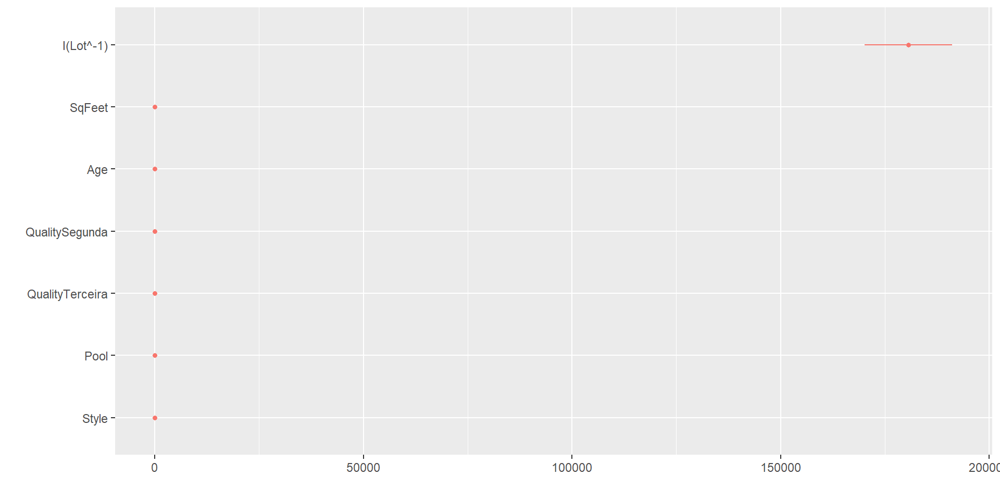- Problema com a escala de \(1/Lot\): valores muito pequenos, gera coeficiente grande!
Na prática
Call:
lm(formula = PU ~ SqFeet + Age + Quality + Pool + Style + rec(Lot),
data = homePrices, subset = -c(86, 104))
Residuals:
Min 1Q Median 3Q Max
-9.9585 -1.3214 -0.0755 1.0420 9.3044
Coefficients:
Estimate Std. Error t value Pr(>|t|)
(Intercept) 0.0937990 0.9476969 0.099 0.921196
SqFeet 0.0047267 0.0002828 16.714 < 2e-16 ***
Age -0.0573513 0.0080902 -7.089 4.52e-12 ***
QualitySegunda -5.0928180 0.4475792 -11.379 < 2e-16 ***
QualityTerceira -5.8442927 0.5949536 -9.823 < 2e-16 ***
Pool 1.5298145 0.4480933 3.414 0.000691 ***
Style -0.1520176 0.0579831 -2.622 0.009009 **
rec(Lot) -1.8065296 0.0533898 -33.837 < 2e-16 ***
---
Signif. codes: 0 '***' 0.001 '**' 0.01 '*' 0.05 '.' 0.1 ' ' 1
Residual standard error: 2.53 on 511 degrees of freedom
Multiple R-squared: 0.8458, Adjusted R-squared: 0.8437
F-statistic: 400.4 on 7 and 511 DF, p-value: < 2.2e-16Na prática
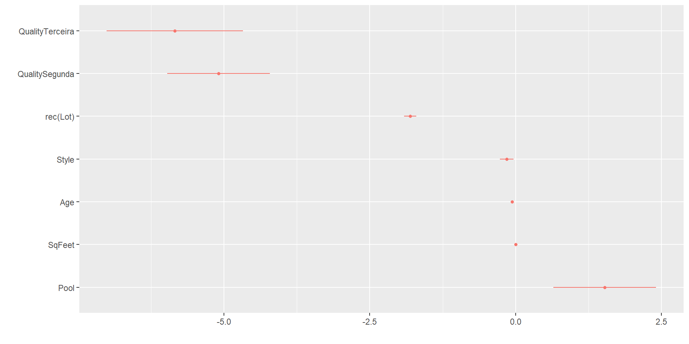Na prática
- Com erros robustos:
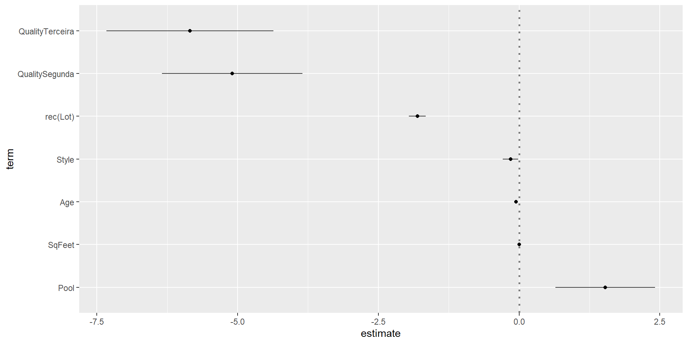
- Com a matriz \(HC_3\) os intervalos de confiança são um pouco mais largos!
Mínimos Quadrados Ponderados
Mínimos Quadrados Ponderados (MQP)
- Se for possível compreender como se comportam os erros do modelo MQO
Mínimos Quadrados Ponderados (MQP)
Se \(\sigma^2\) não é constante, porém consegue-se identificar a função dos erros \(\sigma(X)\)
- \(\pmb \Omega_{\text{MQP}} = \hat \sigma^2 \cdot \begin{pmatrix} w_1 & 0 & \cdots & 0 \\ 0 & w_2 & \cdots & 0 \\ \vdots & \vdots & \ddots & \vdots \\ 0 & 0 & \cdots & w_n \end{pmatrix}\)
Problema: quais pesos aplicar?
- Como a intenção é contornar a heteroscedasticidade (\(\sigma^2 \neq \text{cte}\)), então precisamos de pesos que a anulem:
- \(w_i = 1/\sigma_i^2 = 1/\text{var}(\varepsilon_i)\)
- O problema então é o de estimar \(w_i\) de acordo com a função \(\sigma^2(X)\)
- Como a intenção é contornar a heteroscedasticidade (\(\sigma^2 \neq \text{cte}\)), então precisamos de pesos que a anulem:
Mínimos Quadrados Ponderados (MQP)
- Enquanto no MQO fazemos:
- \(\underset{\beta}{\arg\min} \sum_{i=1}^n (\varepsilon_i^2) = \underset{\beta}{\arg\min} (\mathbf y - \pmb{X\beta})^2\)
- No MQP fazemos:
- \(\underset{\beta}{\arg\min} \sum_{i=1}^n (w_i\cdot\varepsilon_i^2) = \underset{\beta}{\arg\min} \mathbf W(\mathbf y - \pmb{X\beta})^2\)
- Com \(w_i = 1/\sigma^2(X_i)\)
- \(\underset{\beta}{\arg\min} \sum_{i=1}^n (w_i\cdot\varepsilon_i^2) = \underset{\beta}{\arg\min} \mathbf W(\mathbf y - \pmb{X\beta})^2\)
- O estimador MQP, portanto, é:
- \[\hat\beta_{MQP} = (\mathbf{X'WX})^{-1}\mathbf{X'Wy} \qquad(11)\]
- Ao invés de calcular erros robustos, o MQP estima novamente outro vetor \(\pmb{\beta}_{MQP}\), que é mais eficiente que \(\pmb{\beta}_{MQO}\) quando os erros são heteroscedásticos, se os pesos forem bem especificados!
Mínimos Quadrados Ponderados (MQP)
Exemplo WLS Simples
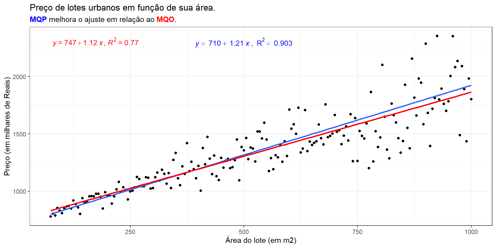Mínimos Quadrados Ponderados (MQP)
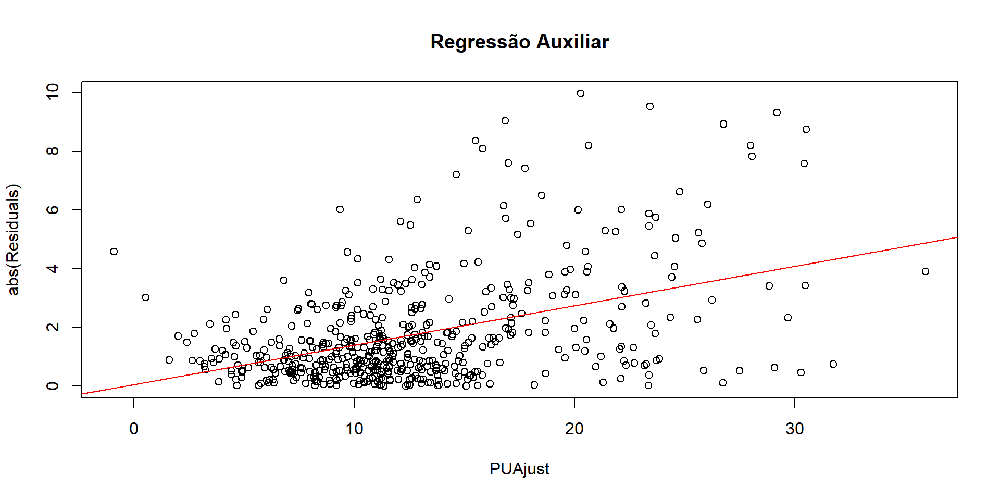Mínimos Quadrados Ponderados (MQP)
w <- 1/fitted(auxFit)^2
fitMQP <- lm(PU ~ I(Lot^-1) + SqFeet + Age + Quality + Pool + Style,
data = homePrices[-c(86, 104), ], weights = w)
summary(fitMQP)
Call:
lm(formula = PU ~ I(Lot^-1) + SqFeet + Age + Quality + Pool +
Style, data = homePrices[-c(86, 104), ], weights = w)
Weighted Residuals:
Min 1Q Median 3Q Max
-6.4454 -0.9125 -0.0099 0.8271 4.9057
Coefficients:
Estimate Std. Error t value Pr(>|t|)
(Intercept) 3.606e+00 9.118e-01 3.955 0.0000875 ***
I(Lot^-1) 1.729e+05 5.151e+03 33.564 < 2e-16 ***
SqFeet 3.085e-03 2.302e-04 13.401 < 2e-16 ***
Age -6.489e-03 4.135e-03 -1.569 0.1172
QualitySegunda -7.197e+00 5.720e-01 -12.581 < 2e-16 ***
QualityTerceira -8.387e+00 6.141e-01 -13.658 < 2e-16 ***
Pool 1.575e+00 5.183e-01 3.038 0.0025 **
Style 4.490e-02 3.853e-02 1.165 0.2444
---
Signif. codes: 0 '***' 0.001 '**' 0.01 '*' 0.05 '.' 0.1 ' ' 1
Residual standard error: 1.455 on 511 degrees of freedom
Multiple R-squared: 0.8857, Adjusted R-squared: 0.8842
F-statistic: 565.9 on 7 and 511 DF, p-value: < 2.2e-16- Aumentou substancialmente o \(R^2\)!
Análise de Resíduos
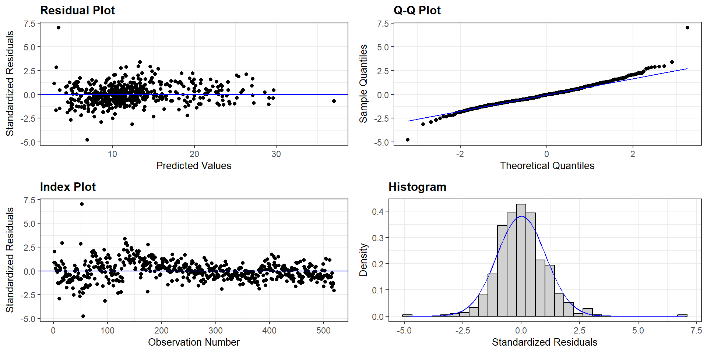- Uma melhora substancial nos erros, apesar de alguns outliers! E continuamos na escala de PU!
Análise de Resíduos
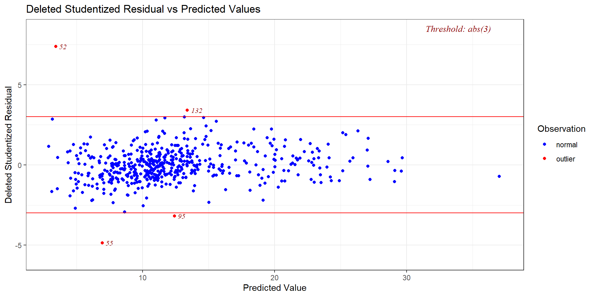Mínimos Quadrados Ponderados (MQP)
w <- 1/fitted(auxFit)^2
fitMQP2 <- lm(PU ~ I(Lot^-1) + SqFeet + Age + Quality + Pool + Style,
data = homePrices[-c(52, 55, 86, 104), ], weights = w[-c(52, 55)])
summary(fitMQP2)
Call:
lm(formula = PU ~ I(Lot^-1) + SqFeet + Age + Quality + Pool +
Style, data = homePrices[-c(52, 55, 86, 104), ], weights = w[-c(52,
55)])
Weighted Residuals:
Min 1Q Median 3Q Max
-4.1369 -0.8969 -0.0360 0.7779 7.2073
Coefficients:
Estimate Std. Error t value Pr(>|t|)
(Intercept) 1.725e+00 9.004e-01 1.916 0.055948 .
I(Lot^-1) 1.747e+05 4.891e+03 35.726 < 2e-16 ***
SqFeet 3.914e-03 2.406e-04 16.269 < 2e-16 ***
Age -1.838e-02 4.801e-03 -3.829 0.000145 ***
QualitySegunda -6.302e+00 5.514e-01 -11.428 < 2e-16 ***
QualityTerceira -7.149e+00 6.010e-01 -11.896 < 2e-16 ***
Pool 1.401e+00 4.896e-01 2.861 0.004391 **
Style -1.005e-01 4.166e-02 -2.414 0.016149 *
---
Signif. codes: 0 '***' 0.001 '**' 0.01 '*' 0.05 '.' 0.1 ' ' 1
Residual standard error: 1.373 on 509 degrees of freedom
Multiple R-squared: 0.8753, Adjusted R-squared: 0.8735
F-statistic: 510.2 on 7 and 509 DF, p-value: < 2.2e-16Análise de Resíduos
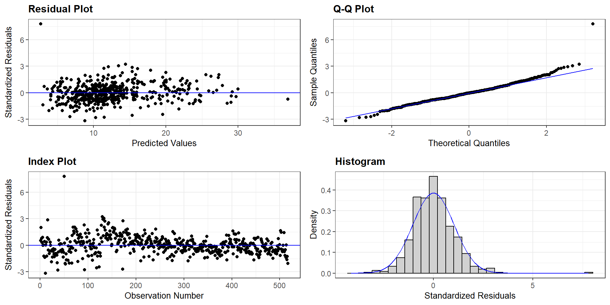Análise de Resíduos
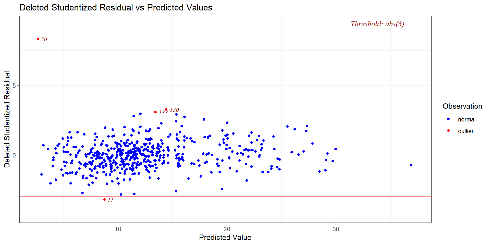Mínimos Quadrados Ponderados (MQP)
w <- 1/fitted(auxFit)^2
fitMQP3 <- lm(PU ~ I(Lot^-1) + SqFeet + Age + Quality + Pool + Style,
data = homePrices[-c(50, 52, 55, 86, 104), ],
weights = w[-c(50, 52, 55)])
summary(fitMQP3)
Call:
lm(formula = PU ~ I(Lot^-1) + SqFeet + Age + Quality + Pool +
Style, data = homePrices[-c(50, 52, 55, 86, 104), ], weights = w[-c(50,
52, 55)])
Weighted Residuals:
Min 1Q Median 3Q Max
-4.4412 -0.8454 -0.0647 0.7817 4.3333
Coefficients:
Estimate Std. Error t value Pr(>|t|)
(Intercept) 1.023e+00 8.501e-01 1.203 0.22945
I(Lot^-1) 1.782e+05 4.613e+03 38.622 < 2e-16 ***
SqFeet 4.139e-03 2.276e-04 18.184 < 2e-16 ***
Age -4.084e-02 5.261e-03 -7.764 4.58e-14 ***
QualitySegunda -5.661e+00 5.238e-01 -10.808 < 2e-16 ***
QualityTerceira -6.247e+00 5.749e-01 -10.865 < 2e-16 ***
Pool 1.225e+00 4.604e-01 2.660 0.00807 **
Style -4.341e-02 3.974e-02 -1.092 0.27516
---
Signif. codes: 0 '***' 0.001 '**' 0.01 '*' 0.05 '.' 0.1 ' ' 1
Residual standard error: 1.289 on 508 degrees of freedom
Multiple R-squared: 0.8735, Adjusted R-squared: 0.8717
F-statistic: 501 on 7 and 508 DF, p-value: < 2.2e-16Análise de Resíduos
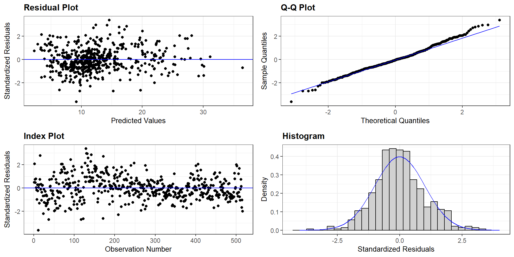Análise de Resíduos
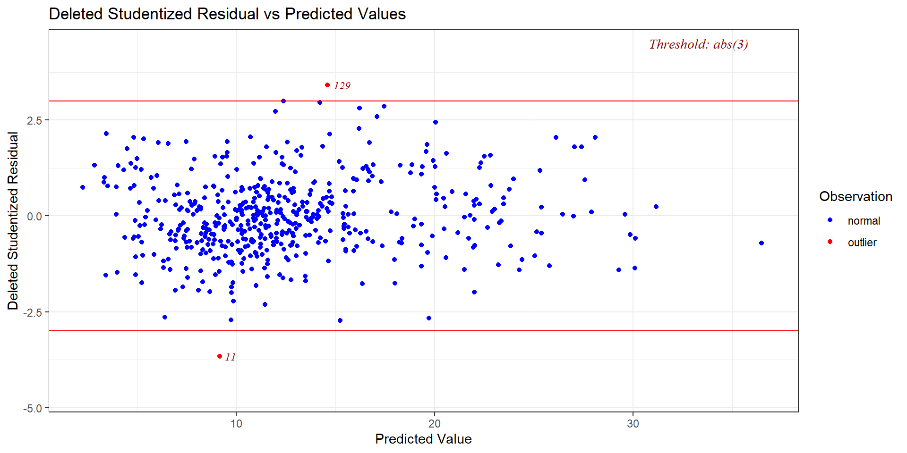Mínimos Quadrados Ponderados (MQP)
w <- 1/fitted(auxFit)^2
fitMQP4 <- lm(PU ~ I(Lot^-1) + SqFeet + Age + Quality + Pool + Style,
data = homePrices[-c(11, 50, 52, 55, 86, 104, 134), ],
weights = w[-c(11, 50, 52, 55, 127)])
summary(fitMQP4)
Call:
lm(formula = PU ~ I(Lot^-1) + SqFeet + Age + Quality + Pool +
Style, data = homePrices[-c(11, 50, 52, 55, 86, 104, 134),
], weights = w[-c(11, 50, 52, 55, 127)])
Weighted Residuals:
Min 1Q Median 3Q Max
-3.4640 -0.8203 -0.0868 0.7781 3.8425
Coefficients:
Estimate Std. Error t value Pr(>|t|)
(Intercept) 1.136e+00 8.361e-01 1.358 0.174925
I(Lot^-1) 1.765e+05 4.540e+03 38.872 < 2e-16 ***
SqFeet 4.127e-03 2.238e-04 18.442 < 2e-16 ***
Age -4.251e-02 5.172e-03 -8.220 1.72e-15 ***
QualitySegunda -5.713e+00 5.124e-01 -11.148 < 2e-16 ***
QualityTerceira -6.211e+00 5.643e-01 -11.008 < 2e-16 ***
Pool 1.769e+00 4.665e-01 3.791 0.000168 ***
Style -2.864e-02 3.905e-02 -0.733 0.463733
---
Signif. codes: 0 '***' 0.001 '**' 0.01 '*' 0.05 '.' 0.1 ' ' 1
Residual standard error: 1.264 on 506 degrees of freedom
Multiple R-squared: 0.8795, Adjusted R-squared: 0.8779
F-statistic: 527.8 on 7 and 506 DF, p-value: < 2.2e-16Análise de Resíduos
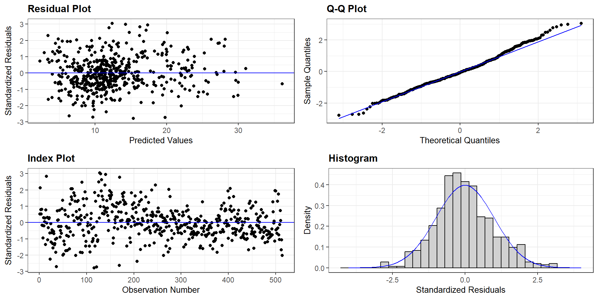Análise de Resíduos
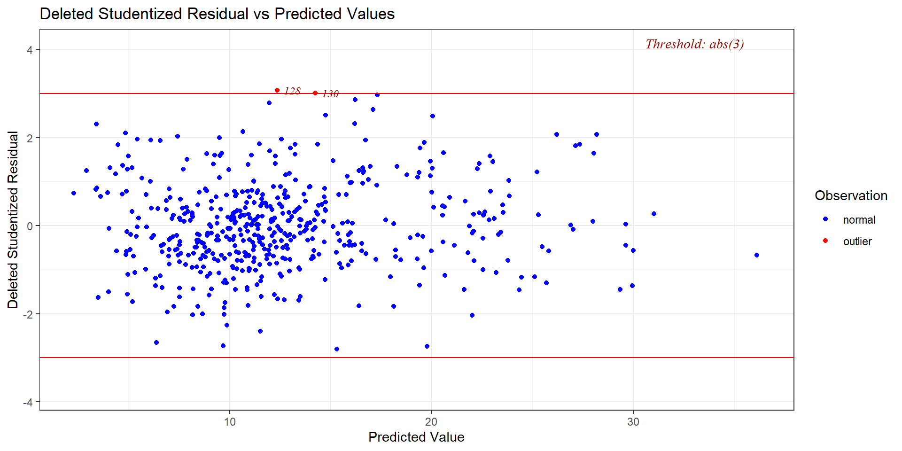Least Squares Percentage Regression (LSPR)
Least Squares Percentage Regression (LSPR)
- Tofallis (2008): mostra que, aplicando-se como pesos ao MQP o vetor:
- \[w_i = 1/PU_i^2\]
- obtém-se o modelo que minimiza os erros médios percentuais absolutos (MAPE)
- Pode-se entender que o LSPR minimiza os resíduos relativos, quando estamos na escala de preços (totais ou unitários):
- \[\%R_i = \frac{y_i - \hat y_i}{y_i}\]
Exemplo
Call: lm(formula = PU ~ SqFeet + Age + Quality + Pool + Style + rec(Lot), data
= homePrices, subset = -c(86, 104), weights = 1/PU^2)
Coefficients:
Estimate Std. Error t value Pr(>|t|)
(Intercept) 1.6916246 0.8317349 2.034 0.0425 *
SqFeet 0.0030978 0.0002225 13.920 < 2e-16 ***
Age -0.0301524 0.0049503 -6.091 2.21e-09 ***
QualitySegunda -5.3646876 0.5093162 -10.533 < 2e-16 ***
QualityTerceira -6.1954031 0.5625798 -11.012 < 2e-16 ***
Pool 0.2148478 0.4147080 0.518 0.6046
Style 0.0073997 0.0411894 0.180 0.8575
rec(Lot) -1.8140101 0.0472500 -38.392 < 2e-16 ***
---
Signif. codes: 0 '***' 0.001 '**' 0.01 '*' 0.05 '.' 0.1 ' ' 1
Residual standard deviation: 0.1956 on 511 degrees of freedom
Multiple R-squared: 0.8364
F-statistic: 373.1 on 7 and 511 DF, p-value: < 2.2e-16
AIC BIC
2300.86 2339.13 Análise dos Resíduos
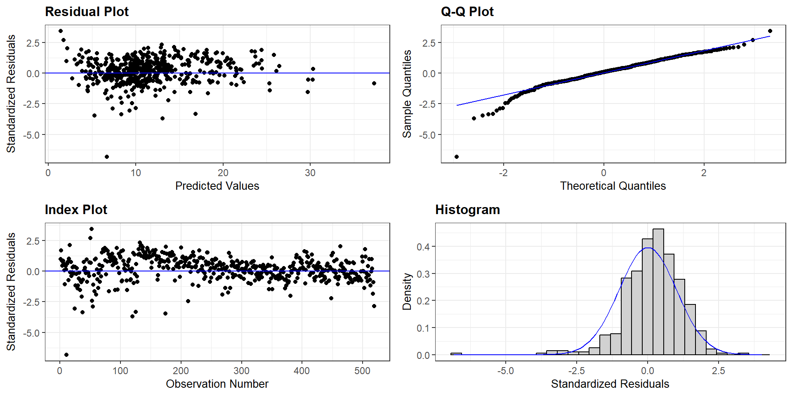Análise dos Resíduos
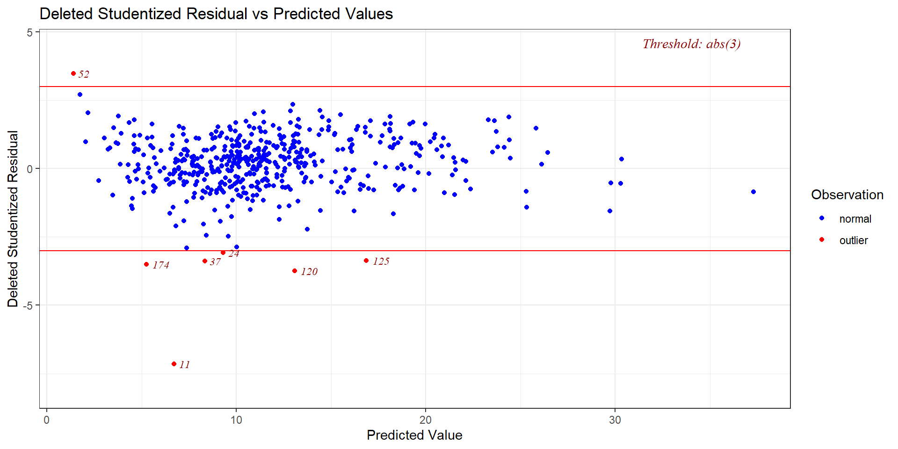Least Squares Percentage Regression (LSPR)
fitLSPR <- lm(PU ~ SqFeet + Age + Quality + Pool + Style + rec(Lot),
data = homePrices,
subset = -c(11, 24, 37, 52, 86, 106, 122, 127, 176),
weights = 1/PU^2)
S(fitLSPR)Call: lm(formula = PU ~ SqFeet + Age + Quality + Pool + Style + rec(Lot), data
= homePrices, subset = -c(11, 24, 37, 52, 86, 106, 122, 127, 176), weights =
1/PU^2)
Coefficients:
Estimate Std. Error t value Pr(>|t|)
(Intercept) 1.0753145 0.8199475 1.311 0.1903
SqFeet 0.0034489 0.0002181 15.810 < 2e-16 ***
Age -0.0384080 0.0049584 -7.746 5.25e-14 ***
QualitySegunda -4.8132361 0.5056426 -9.519 < 2e-16 ***
QualityTerceira -5.4167369 0.5594996 -9.681 < 2e-16 ***
Pool 1.1396347 0.4601071 2.477 0.0136 *
Style -0.0131934 0.0402992 -0.327 0.7435
rec(Lot) -1.7423978 0.0452341 -38.520 < 2e-16 ***
---
Signif. codes: 0 '***' 0.001 '**' 0.01 '*' 0.05 '.' 0.1 ' ' 1
Residual standard deviation: 0.1821 on 504 degrees of freedom
Multiple R-squared: 0.853
F-statistic: 417.8 on 7 and 504 DF, p-value: < 2.2e-16
AIC BIC
2205.56 2243.70 Análise dos Resíduos
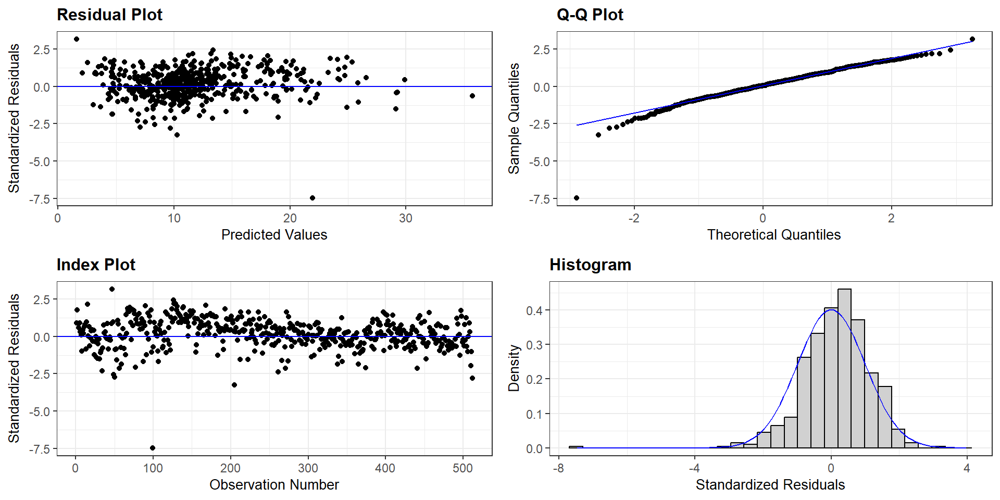Análise dos Resíduos
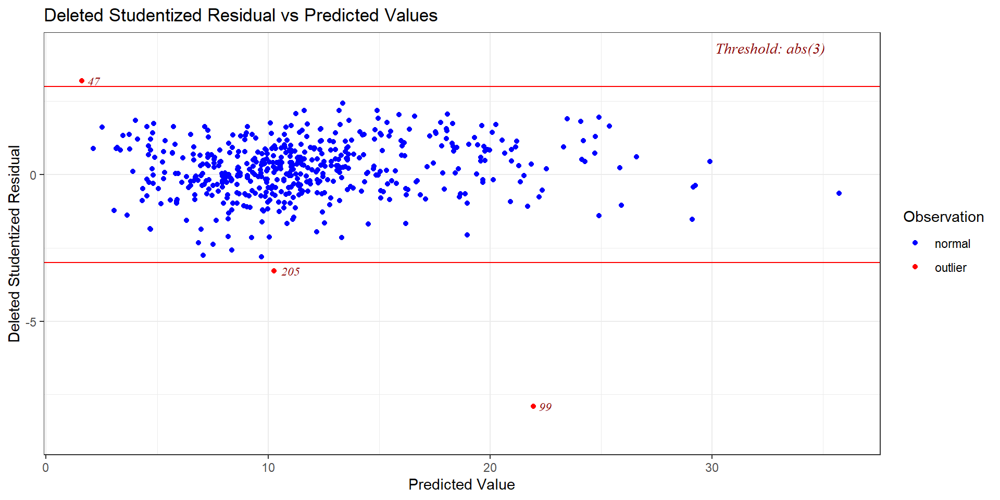Least Squares Percentage Regression (LSPR)
fitLSPR <- lm(PU ~ SqFeet + Age + Quality + Pool + Style + rec(Lot),
data = homePrices,
subset = -c(11, 24, 37, 50, 52, 86, 104, 106, 122, 127, 176, 214),
weights = 1/PU^2)
S(fitLSPR)Call: lm(formula = PU ~ SqFeet + Age + Quality + Pool + Style + rec(Lot), data
= homePrices, subset = -c(11, 24, 37, 50, 52, 86, 104, 106, 122, 127, 176,
214), weights = 1/PU^2)
Coefficients:
Estimate Std. Error t value Pr(>|t|)
(Intercept) 0.7811708 0.7590003 1.029 0.304
SqFeet 0.0038422 0.0002051 18.730 < 2e-16 ***
Age -0.0448699 0.0046846 -9.578 < 2e-16 ***
QualitySegunda -5.0850929 0.4727954 -10.755 < 2e-16 ***
QualityTerceira -5.4665513 0.5217230 -10.478 < 2e-16 ***
Pool 1.8474344 0.4343672 4.253 0.0000252 ***
Style -0.0168436 0.0371924 -0.453 0.651
rec(Lot) -1.7270445 0.0418499 -41.268 < 2e-16 ***
---
Signif. codes: 0 '***' 0.001 '**' 0.01 '*' 0.05 '.' 0.1 ' ' 1
Residual standard deviation: 0.1677 on 501 degrees of freedom
Multiple R-squared: 0.8744
F-statistic: 498.5 on 7 and 501 DF, p-value: < 2.2e-16
AIC BIC
2112.44 2150.53 Análise dos Resíduos
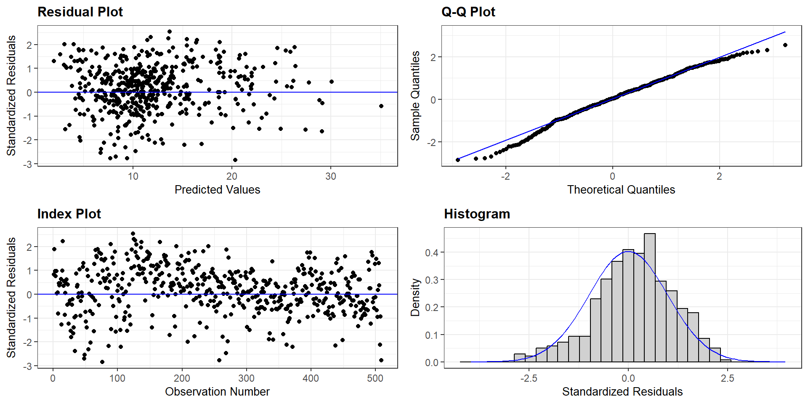Análise dos Resíduos
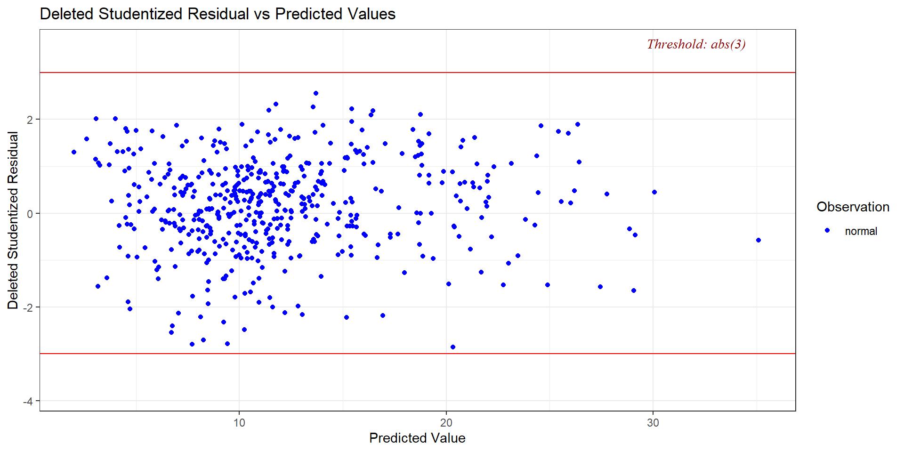Estatísticas
| Termo | Est. | Erro | t | p valor |
|---|---|---|---|---|
| (Intercept) | 0,78 | 0,76 | 1,03 | 0,30 |
| SqFeet | 0,00 | 0,00 | 18,73 | 0,00 |
| Age | -0,04 | 0,00 | -9,58 | 0,00 |
| QualitySegunda | -5,09 | 0,47 | -10,76 | 0,00 |
| QualityTerceira | -5,47 | 0,52 | -10,48 | 0,00 |
| Pool | 1,85 | 0,43 | 4,25 | 0,00 |
| Style | -0,02 | 0,04 | -0,45 | 0,65 |
| rec(Lot) | -1,73 | 0,04 | -41,27 | 0,00 |
| Note: | ||||
| Erro-padrão dos resíduos: 0,17 em 501 graus de liberdade. | ||||
| a MADn: 1,70 | ||||
| b R2: 0,87 | ||||
| c R2ajust: 0,87 | ||||
| d R2pred: 0,87 | ||||
| e MAPE: 13,26% |
- É uma alternativa interessante, pois é fácil explicar como foram obtidos os pesos!
Transformações da variável dependente
Box-Cox
- É possível transformar a variável dependente
- Isto pode ser um caminho fácil para obter normalidade e homoscedasticidade
- Porém, ao custo da deformação dos dados e da necessidade de retransformação
- As transformações de Box-Cox consistem em encontrar um valor de um parâmetro \(\lambda\) que seja o ideal, tal que:
- \[ y_i^{(\lambda)} = \begin{cases} \frac{y_i^\lambda - 1}{\lambda}& \text{se}\;\lambda \neq 0 \\ \ln y_i & \text{se}\; \lambda = 0 \end{cases} \qquad(12)\]
- As transformações assim efetuadas tendem a ser estabilizadoras da variância e tornam a distribuição dos dados mais parecidos com a distribuição normal
Box-Cox
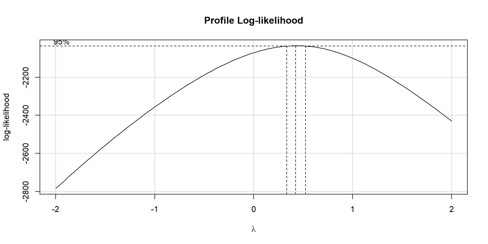- \(\lambda \approx 0,5\)
Modelo Transformado
Call: lm(formula = sqrt(PU) ~ SqFeet + Age + Quality + Pool + Style + rec(Lot),
data = homePrices, subset = -c(86, 104))
Coefficients:
Estimate Std. Error t value Pr(>|t|)
(Intercept) 1.73132159 0.12472281 13.881 < 2e-16 ***
SqFeet 0.00061616 0.00003722 16.556 < 2e-16 ***
Age -0.00940351 0.00106472 -8.832 < 2e-16 ***
QualitySegunda -0.56838307 0.05890421 -9.649 < 2e-16 ***
QualityTerceira -0.70669739 0.07829959 -9.026 < 2e-16 ***
Pool 0.22917014 0.05897186 3.886 0.000115 ***
Style -0.01893960 0.00763094 -2.482 0.013387 *
rec(Lot) -0.24952928 0.00702643 -35.513 < 2e-16 ***
---
Signif. codes: 0 '***' 0.001 '**' 0.01 '*' 0.05 '.' 0.1 ' ' 1
Residual standard deviation: 0.3329 on 511 degrees of freedom
Multiple R-squared: 0.8518
F-statistic: 419.7 on 7 and 511 DF, p-value: < 2.2e-16
AIC BIC
341.12 379.39 Análise de Resíduos
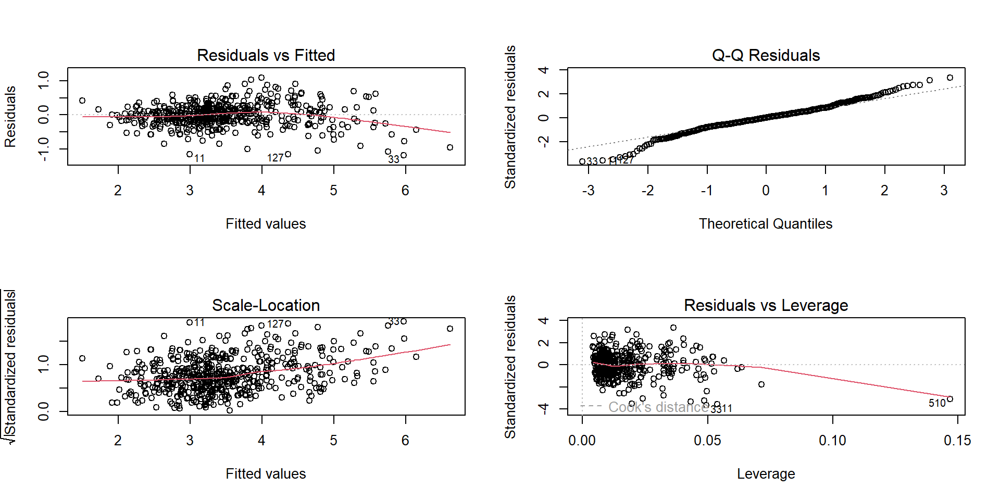Plotagem do Modelo
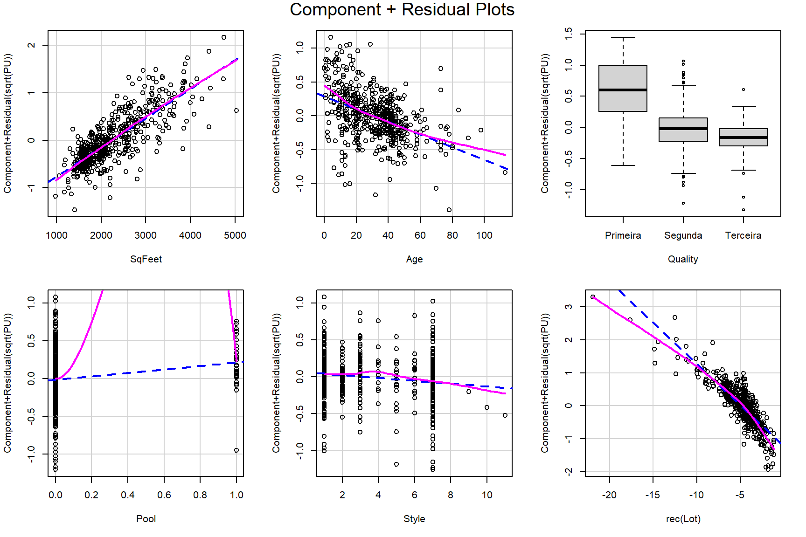Reanálise das transformações das var. independentes
fit8 <- lm(sqrt(PU) ~ log(Lot) + log(SqFeet) + log1p(Age) + Quality + Pool +
Style, data = homePrices, subset = -c(86, 104))
S(fit8)Call: lm(formula = sqrt(PU) ~ log(Lot) + log(SqFeet) + log1p(Age) + Quality +
Pool + Style, data = homePrices, subset = -c(86, 104))
Coefficients:
Estimate Std. Error t value Pr(>|t|)
(Intercept) 6.923522 0.660396 10.484 < 2e-16 ***
log(Lot) -1.410112 0.033698 -41.846 < 2e-16 ***
log(SqFeet) 1.553586 0.082368 18.862 < 2e-16 ***
log1p(Age) -0.208676 0.023382 -8.924 < 2e-16 ***
QualitySegunda -0.569539 0.052636 -10.820 < 2e-16 ***
QualityTerceira -0.663165 0.070597 -9.394 < 2e-16 ***
Pool 0.189504 0.053536 3.540 0.000437 ***
Style -0.023762 0.006885 -3.451 0.000604 ***
---
Signif. codes: 0 '***' 0.001 '**' 0.01 '*' 0.05 '.' 0.1 ' ' 1
Residual standard deviation: 0.2989 on 511 degrees of freedom
Multiple R-squared: 0.8806
F-statistic: 538.2 on 7 and 511 DF, p-value: < 2.2e-16
AIC BIC
229.26 267.53 Plotagem do Modelo
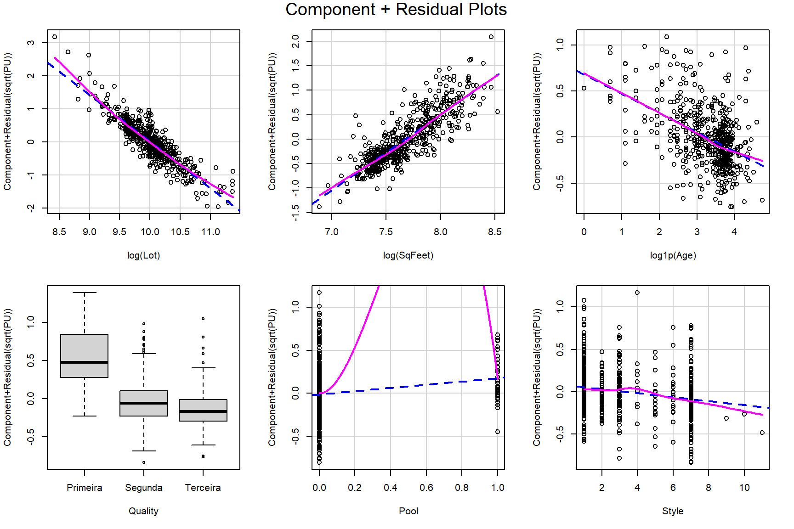Análise de Resíduos do modelo transformado
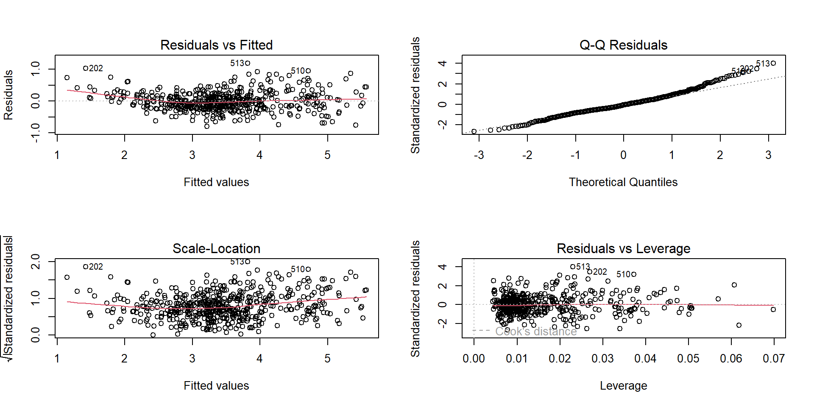Outras transformações da variável dependente
fit9 <- lm(log(PU) ~ log(Lot) + log(SqFeet) + log1p(Age) + Quality + Pool +
Style, data = homePrices, subset = -c(86, 104))
S(fit9)Call: lm(formula = log(PU) ~ log(Lot) + log(SqFeet) + log1p(Age) + Quality +
Pool + Style, data = homePrices, subset = -c(86, 104))
Coefficients:
Estimate Std. Error t value Pr(>|t|)
(Intercept) 4.976733 0.368000 13.524 < 2e-16 ***
log(Lot) -0.872305 0.018778 -46.454 < 2e-16 ***
log(SqFeet) 0.895551 0.045899 19.511 < 2e-16 ***
log1p(Age) -0.124002 0.013030 -9.517 < 2e-16 ***
QualitySegunda -0.251374 0.029331 -8.570 < 2e-16 ***
QualityTerceira -0.341996 0.039340 -8.693 < 2e-16 ***
Pool 0.107177 0.029832 3.593 0.000359 ***
Style -0.015914 0.003837 -4.148 0.0000393 ***
---
Signif. codes: 0 '***' 0.001 '**' 0.01 '*' 0.05 '.' 0.1 ' ' 1
Residual standard deviation: 0.1666 on 511 degrees of freedom
Multiple R-squared: 0.8903
F-statistic: 592.6 on 7 and 511 DF, p-value: < 2.2e-16
AIC BIC
-377.71 -339.45 Anáilse de Resíduos
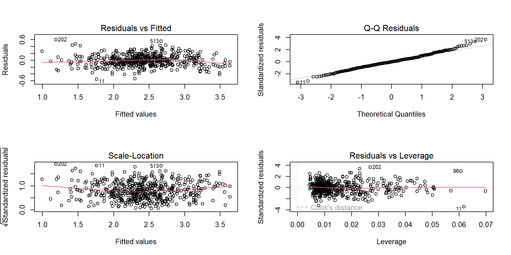- É quase que um milagre!
Plotagem do Modelo
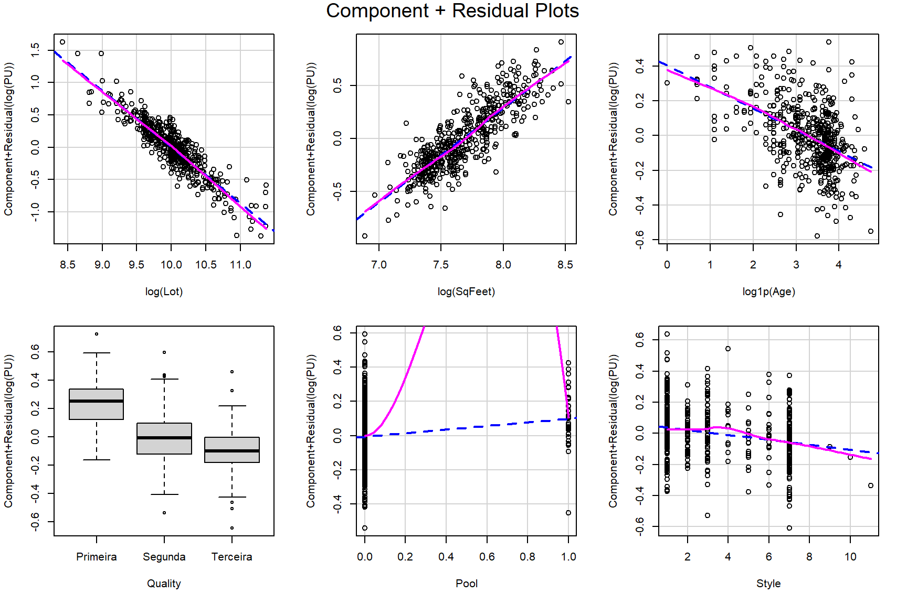Identificação de Outliers
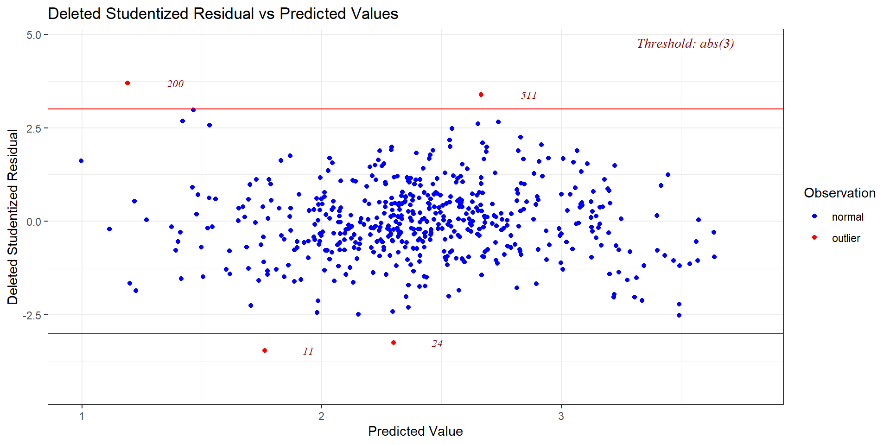Modelo Final
Call: lm(formula = log(PU) ~ log(Lot) + log(SqFeet) + log1p(Age) + Quality +
Pool + Style, data = homePrices, subset = -c(11, 24, 86, 104, 202, 513))
Coefficients:
Estimate Std. Error t value Pr(>|t|)
(Intercept) 4.877206 0.356413 13.684 < 2e-16 ***
log(Lot) -0.866663 0.018372 -47.172 < 2e-16 ***
log(SqFeet) 0.902263 0.044074 20.471 < 2e-16 ***
log1p(Age) -0.131482 0.012524 -10.498 < 2e-16 ***
QualitySegunda -0.240278 0.028170 -8.529 < 2e-16 ***
QualityTerceira -0.321531 0.037927 -8.478 2.52e-16 ***
Pool 0.127364 0.029038 4.386 1.40e-05 ***
Style -0.015355 0.003688 -4.163 3.69e-05 ***
---
Signif. codes: 0 '***' 0.001 '**' 0.01 '*' 0.05 '.' 0.1 ' ' 1
Residual standard deviation: 0.1595 on 507 degrees of freedom
Multiple R-squared: 0.8979
F-statistic: 637 on 7 and 507 DF, p-value: < 2.2e-16
AIC BIC
-419.41 -381.21 Resíduos do modelo final
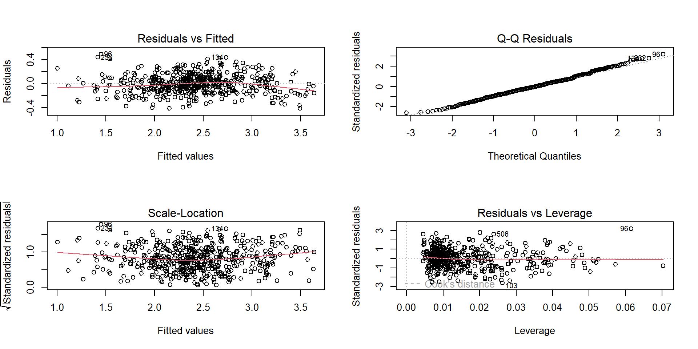Modelo Multiplicativo
Modelo Multiplicativo
- Quando utilizamos a transformação \(\ln\) para a variável dependente, temos:
- \(\ln(PU) = \beta_0 + \beta_1 \mathbf{X_1} + \ldots + \beta_k \mathbf{X_k} + \pmb{\varepsilon}\)
- Quando retornamos para a escala original, temos:
- \(PU = \exp(\beta_0 + \beta_1 \mathbf{X_1} + \ldots + \beta_k \mathbf{X_k} + \pmb{\varepsilon})\)
- Lembrando que a exponencial da soma é a multiplicação das exponenciais, temos:
- \(PU = \exp(\beta_0)\cdot\exp(\beta_1 \mathbf{X_1})\cdot\ldots \cdot \exp(\beta_k \mathbf{X_k}) \cdot\exp(\pmb{\varepsilon})\)
- Em suma, na escala original, o modelo com a variável dependente transformada para \(\ln\) é um modelo multiplicativo
TCL multiplicativo
- Um processo lognormal é a realização estatística do produto de muitas variáveis aleatórias independentes, cada qual positiva.
- Isto pode ser provado analisando-se o TCL no domínio log!
- A média geométrica ou multiplicativa de \(n\) variáveis aleatórias \(X_i\) positivas independentes e identicamente distribuídas apresenta, quando \(n \rightarrow \infty\), distribuição aproximadamente lognormal com parâmetros \(\mu = \mathbb E (\ln X_i)\) e \(\sigma^2 = \text{Var}(\ln Xi)/n\).
- Também conhecida como Lei de Gibrat!
Seleção de Variáveis
Aumentando a complexidade do modelo
Após encontrar as transformações corretas para a variável dependente, para as principais variáveis explicativas, e a remoção dos outliers, algumas variáveis podem mostrar significantes, quando antes não eram
Desta forma, pode-se aumentar a complexidade do modelo, buscando um maior grau de ajuste
Aumentando a complexidade do modelo
Call: lm(formula = log(PU) ~ log(Lot) + log(SqFeet) + log1p(Age) + Quality +
Pool + Style + Garage + Baths + Beds + Air + Highway, data = homePrices, subset
= -c(11, 24, 86, 104, 202, 513))
Coefficients:
Estimate Std. Error t value Pr(>|t|)
(Intercept) 5.526817 0.384582 14.371 < 2e-16 ***
log(Lot) -0.869107 0.018350 -47.364 < 2e-16 ***
log(SqFeet) 0.786353 0.049632 15.844 < 2e-16 ***
log1p(Age) -0.121218 0.012913 -9.387 < 2e-16 ***
QualitySegunda -0.232166 0.027937 -8.310 8.98e-16 ***
QualityTerceira -0.275057 0.038463 -7.151 3.06e-12 ***
Pool 0.110014 0.028544 3.854 0.000131 ***
Style -0.016260 0.003645 -4.461 1.01e-05 ***
Garage 0.017600 0.013490 1.305 0.192587
Baths 0.042502 0.011747 3.618 0.000327 ***
Beds 0.011990 0.009002 1.332 0.183509
Air 0.033614 0.021384 1.572 0.116599
Highway -0.107283 0.048185 -2.227 0.026424 *
---
Signif. codes: 0 '***' 0.001 '**' 0.01 '*' 0.05 '.' 0.1 ' ' 1
Residual standard deviation: 0.1555 on 502 degrees of freedom
Multiple R-squared: 0.9039
F-statistic: 393.5 on 12 and 502 DF, p-value: < 2.2e-16
AIC BIC
-440.63 -381.22 Seleção de Variáveis
Para um bom modelo preditivo, pode ser conveniente a manutenção de alguma variável, ainda que esta não tenha apresentado significância como as outras
No entanto, muitas variáveis não acrescentam poder de explicação ao modelo
Um método para aferir quais variáveis devem permanecer ou não no modelo é o método da seleção de variáveis, baseada em critérios de ajuste, como o \(R^2_{ajust}\)
Seleção de Variáveis com \(R^2_{ajust}\)
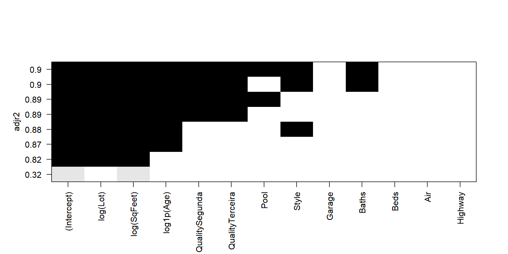Modelo Final
Call: lm(formula = log(PU) ~ log(Lot) + log(SqFeet) + log1p(Age) + Quality +
Pool + Style + Baths, data = homePrices, subset = -c(11, 24, 86, 104, 202,
513))
Coefficients:
Estimate Std. Error t value Pr(>|t|)
(Intercept) 5.433029 0.373261 14.556 < 2e-16 ***
log(Lot) -0.873500 0.018130 -48.180 < 2e-16 ***
log(SqFeet) 0.816476 0.047664 17.130 < 2e-16 ***
log1p(Age) -0.121883 0.012511 -9.742 < 2e-16 ***
QualitySegunda -0.233921 0.027732 -8.435 3.48e-16 ***
QualityTerceira -0.288248 0.038072 -7.571 1.77e-13 ***
Pool 0.115856 0.028669 4.041 6.15e-05 ***
Style -0.016376 0.003633 -4.507 8.17e-06 ***
Baths 0.049265 0.011408 4.318 1.89e-05 ***
---
Signif. codes: 0 '***' 0.001 '**' 0.01 '*' 0.05 '.' 0.1 ' ' 1
Residual standard deviation: 0.1568 on 506 degrees of freedom
Multiple R-squared: 0.9015
F-statistic: 579.1 on 8 and 506 DF, p-value: < 2.2e-16
AIC BIC
-436.04 -393.60 Poder de predição
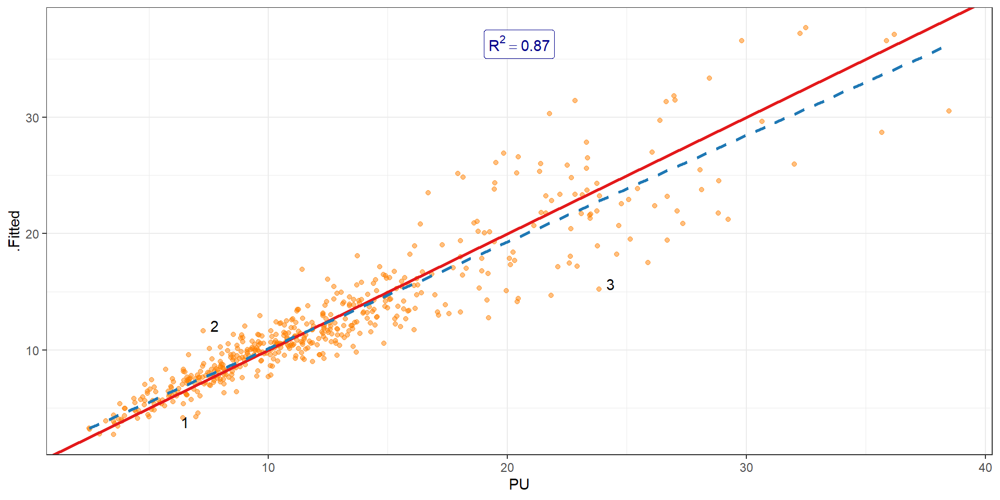- Na escala original, o poder de predição do modelo com a variável transformada sempre cai um pouco!
Equação de Estimação
Equação de Estimação
- A equação de regressão para o modelo final adotado é:
- \[\begin{aligned} \ln(PU) = 5,43 - 0,87\ln(Lot) + 0,82\ln(SqFeet) - \\ 0,12\ln(1 + Age) - 0,23\cdot\text{Quality2ª} - 0,29\cdot\text{Quality3ª} + \\ 0,12\cdot\text{Pool}-0,016\cdot Style + 0,05\cdot Baths \end{aligned} \]
- Exponenciando ambos os lados, chegamos à equação de estimação:
\[\begin{aligned} PU = \exp[5,43 - 0,87\ln(Lot) + 0,82\ln(SqFeet) - \\ 0,12\ln(1 + Age) - 0,23\cdot\text{Quality2ª} - 0,29\cdot\text{Quality3ª} + \\ 0,12\cdot\text{Pool}-0,016\cdot Style + 0,05\cdot Baths] \end{aligned} \]
\[ \begin{aligned} PU = \exp(5,43)\cdot\exp(-0,87\ln(Lot))\cdot\exp(0,82\ln(SqFeet)) \\ \exp(-0,12\ln(1 + Age))\cdot \exp(- 0,23\cdot\text{Quality2ª}) \cdot \\ \exp(- 0,29\cdot\text{Quality3ª}) \cdot \exp(0,12\cdot\text{Pool}) \\ \cdot\exp(-0,016\cdot Style) \cdot\exp(0,05\cdot Baths) \end{aligned} \]
Referências

VALORÍSTICA